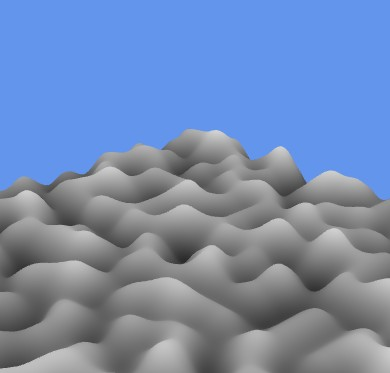

Procedural Generation

The objective of this project was to implement the Improved 3D Perlin Gradient Noise algorithm directly in GLSL to generate seamless procedural textures. The graphics framework was extended to support high-precision texture formats (RGBA32F, R32F) and configurable offscreen framebuffers, enabling the generation of 2D slices of 3D noise patterns and rendering them both as flat textures and displaced 3D surfaces.
D07GradientNoise and updated CMakeLists.txt to register the demo in DemosFactory under the short name "gradient".Texture class with a LoadAsFormat function, implementing specialized GL::TexStorage2D memory allocation with runtime branching for WebGL and OpenGL 4.2+ compatibility.Framebuffer class to handle dynamic texture format modifications, allowing the configuration of an R32F offscreen buffer for storing single-channel noise values.gen_gradient_noise.vert/.frag) using a hardcoded 64-size permutation table, 12 fixed gradient directions, and quintic (5th-degree) smoothing.simple.vert/.frag for rendering a 2D texture slice on a quad, and surface.vert for a 3D terrain-like surface using vertex displacement based on the generated noise.GL:: wrappers, and applied clang-format.
Implementing the entire noise generation pipeline into GPU shaders (GLSL) for real-time calculation presented significant technical challenges and insights, especially when contrasted with the previous CPU-bound Value Noise project. Designing flexible texture loading and framebuffer systems that support different color formats like R32F was crucial for optimization and cross-platform WebGL stability. Witnessing pure mathematical formulas and fixed gradient vectors morph into organic, natural-looking patterns like marble and wood felt truly magical. Seeing those noise maps dynamically displace a flat plane mesh into a rolling 3D landscape in real-time provided a profound appreciation for procedural generation and low-level shader engineering.